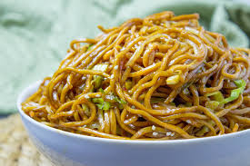

Chinese Fried Noddle (Egg Chow Mein)

INGREDIENTS
- 200g Noodles
- 100g eggs
- 100g vegetables
- 3g salt
- 25g soy sauce
- 50g peanut oill
COOKING METHODS
- Break the eggs and put them into a bowl. Beat the eggs with chopsticks until thoroughly mixed. Add a little
refined salt and set them aside to use later.
- Wash vegetables and cut them into small pieces. Clean the scallions and dice them finely. Set them by to use
later.
- Cook the noodles until they are well-done. Rinse them with cool water. Dish them out of the wok and leave
them to cool.
- Add an appropriate amount of peanut oil into the wok. Heat up the wok until it is seventy percent hot. Add the
egg mixture into the wok and stir the eggs around until they are scattered and broken.Place them in a bowl when
done.
- Get another wok and heat it up with the rest of the peanut oil to seventy percent hot. Then add the scallion
pieces into the wok. When the scallions spread their fragrance, drop rape pieces, soy sauce, and refined salt
into the wok. Cook them until welldone.
- Nextdish them out and leave the juice int the wok. bring the juice to a boil thenput the noodles into the wok
and stir for about 3 minutes. When the juice has cooked out and the noodles are well-done, add the eggs and
vegetable pieces. Mix them evenly then serve.